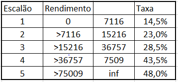

Programação
Exercícios
Notas
Os exercícios denominados “King …” são retirados do livro
“C Programming: A Modern Approach, 2nd Edition” do K. N. King
2 Fundamentos
3 I/O Formatado
Exercícios I/O Formatado King
–
King 3.1. mudar formato de data
Escreve um programa que aceita uma data do utilizador no formato “dd/mm/aaaa” e escreve na consola a mesma data no formato “aaaa-mm-dd”.
Insira data: 01/02/2023
Escreveu: 2023/02/01–
King 3.2. formatar input produtos
Escreve um programa que formata os dados de um produto inseridos pelo utilizador.
Insira o ID do produto: 583
Insira o preço: 13.5
Insira a data de aquisição (dd/mm/aaaa): 24/10/2010
Item Preço Data da
Unitário Compra
583 € 13.5 2010/10/24Nota: o ID do item e a data deve estar alinhados à esquerda; o preço unitário deve estar alinhado à direita. Dica: usa “ para alinhas as colunas.
–
King 3.3. TODO
–
King 3.4. TODO
–
King 3.5. TODO
–
King 3.6. frações
Escreve um programa que recebe 2 frações do utilizador e escreve a sua soma. O programa recebe as duas frações de uma só vez, separadas por +.
Insira as fracoes: 5/6+3/4
Soma: 38/244 Expressões
King
–
King 4.1. inverter 2 digitos
Escreve um programa que pede ao utilizar um número inteiro de 2 digitos e devolve esse número com os digitos invertidos. Exemplo de execução:
Insira número inteiro: 42
Invertido: 24Os 2 números devem estar alinhados.
Dica: %10 devolve o último digito de um número e /10 remove o último digito.
–
King 4.2 inverter 3 digitos
Extende o programa anterior (King 4.1.) para números de 3 digitos.
–
King 4.3 inverter 3 digitos, variante
Reimplementa o programa do King 4.2 sem usar aritmética.
5 Exercícios Seleção
King
King 5.1 quantos digitos
Escreve um programa que recebe um número inteiro e indica quantos digitos esse número tem.
Assume que o número nunca tem mais de 4 digitos.
Introduza numero inteiro (maximo 4 digitos): 42
# digitos: 2Ajuda: usa if para fazer essa verificação, e.g. se o número estiver entre 10 e 99, então tem 2 digitos.
King 5.2 conversão AM/PM
Escreve um programa que recebe uma hora no formato de 0-24h e converte para o formato 0-12h.
Introduza hora no formato 24h: 23:32
Hora no formato 12h: 11:32 PM
Introduza hora no formato 24h: 10:32
Hora no formato 12h: 10:32 AM
King 5.3. TODO
King 5.4 escala Beaufort
A escala de Beaufort indica uma descrição do vento com base na sua velocidade. Uma versão simplificada é a seguinte:
| Speed (knots) | Description |
|---|---|
| <1 | Calm |
| 1-3 | Light air |
| 4-27 | Breeze |
| 28-47 | Gale |
| 48-63 | Storm |
| >63 | Hurricane |
Escreve um programa que recebe a velocidade do vento e indica a descrição correspondente.
King 5.5 escalões IRS
O imposto cobrado sobre o rendimento é feito de forma progressiva por escalões (exemplo no slide seguinte). Versão simplificada dos escalões de 2023:

Escreve um programa que recebe o rendimento anual bruto e indica o imposto total sobre o rendimento e o rendimento líquido final.
Imposto progressivo significa que o mesmo rendimento vai ser tributado em escalões diferentes, e.g.
Rendimento: 20000€
Tributaçao no escalão 1: 7116 * 14,5%
Tributaçao no escalão 2: (15216 - 7116) * 23%
Tributaçao no escalão 3: (20000 - 15216) * 28,5%
Tributaçao no escalão 4 e 5 não existe porque o
rendimento não é alto o suficiente.King 5.6 TODO
King 5.7 min e max de 4 números
Escreve um programa que recebe 4 números inteiros e indica o número mais alto e o mais pequeno.
Enter four integers: 21 43 10 35
Largest: 43
Smallest : 10Usa o mínimo de if possível.
Ajuda: 4 if são suficientes.
King 5.8 voo mais próximo TODO
King 5.9 data menor
Escreve um programa que pede 2 datas ao utilizador e indica qual é a data que vem antes no calendário.
Data 1: 3/6/2007
Data 2: 3/6/2005
3/6/2005 vem antes de 3/6/2007King 5.10 nota para letra
Escreve um programa que converte uma nota entre 0 e 100 para uma letra, segundo a seguinte correspondência: A = 90-100, B = 80-89, C = 70-79, D = 60-69, F = 0-59.
A nota é lida do utilizador. Usa uma instrução switch para implementar o programa. O programa indica uma mensagem de erro se a nota for inferior a 0 ou superior a 100.
Nota: 84
Letra: B
Nota: -1
Erro, nota deve estar entre 0 e 100.Ajuda: usa o primeiro digito da nota para fazer a correspondência no switch.
King 5.11 número por extenso
Escreve um programa que recebe um inteiro de 2 digitos e escreve o número por extenso. Implementa o programa sem if.
Nota: 42
Letra: quarenta e doisExercícios Seleção AFA
AFA 5.1. Converte gramas para outras unidades
Escreve um programa que converte entre unidades de massa. O programa primeiro pede o valor da massa em gramas. Depois mostra um menu com as opções de conversão. O utilizador recebe a unidade de destino e no final o programa mostra a massa convertida.
Introduza massa em gramas: 500
Qual e a unidade de conversao:
1 - oz
2 - lb
3 - kg
Escolha: 3
500 g = 0.5000 kgAFA 5.2 Converter unidades de massa
Altera o programa AFA 5.1 para se possa converter entre quaisquer 2 unidades. Para conseguir isto, o programa pede o valor da massa, depois pede a unidade desse valor e finalmente a unidade da conversão.
Introduza massa em gramas: 500
Qual e a unidade desta masa:
1 - oz
2 - lb
3 - kg
4 - g
Escolha: 4
Qual e a unidade de conversao:
1 - oz
2 - lb
3 - kg
Escolha: 3
500 g = 0.5000 kg6 Exercícios Ciclos
Ciclos King
King 6.1. Maior número de série recebida
Escreve um programa que encontra o maior número numa série de números introduzidos pelo utilizador. O programa pede os números um a um, até encontrar um número seguido da letra f.
Número: 60
Número: 38.3
Número: 4.89
Número: 100.62
Número: 75.2295f
Número maior: 100.62King 6.2. Máximo Divisor Comum
Escreve um programa para calcular o máximo divisor comum (MCD) entre 2 inteiros. O programa pede 2 inteiros ao utilizador e indica o MCD.
Numeros: 12 28
MCD: 4A estratégia mais simples (embora menos eficiente) é verificar o resto da divisão dos 2 números recebidos por todos os números a partir do menos dos 2 recebidos até 1. Assim que encontrar um número cujo resto das duas divisões seja 0, é esse o MCD, e.g.
28 % 12 != 0
12 % 12 == 0
--
28 % 11 != 0
12 % 11 != 0
--
28 % 10 != 0
12 % 10 != 0
--
.
.
.
28 % 4 == 0
12 % 4 == 0
MCD = 4 -> parar cicloKing 6.3. Simplificar fração
Escreve um programa que recebe 1 fração e simplifica-a.
Introduza fracao: 6/12
Simplificada: 1/2Dica: usar a implementação do 6.2. para dividir o numerador e denominador pelo máximo divisor comum.
king 6.5.
Escreve um programa que recebe um inteiro (de qualquer tamanho) e inverte os digitos. Usar apenas aritmética.
King 6.6. Quadrados inferiores a n
Escreve um programa que recebe um número n e escreve na consola todos os quadrados pares inferiores a n. Por exemplo, se o utilizador introduzir 100:
4
16
36
64
100Exercícios Ciclos AFA
7 Exercícios Tipos
Exercícios Tipos King
King 7.1. modificado
Escreve um programa que determina o menor número cujo quadrado causa overflow para int. Modifica o programa para usar short int, unsigned int, long, unsigned long.
Para valores inteiros, o valor máximo é dado por 2^n, onde n é o número de bits. Com base nos resultados, consegues perceber qual é o número de bits usado para cada tipo?
A executar para int
Lado do primeiro quadrado que causa overflow: 46341
Quadro que causa overflow: -2147479015
Ultimo quadrado antes de overflow: 2147395600Dica: para verificar quando houve overflow, verifica quando um determinado quadrado passa a ser menor que o quadrado anterior.
King 7.2 TODO
King 7.3 TODO
King 7.4 Número teclas telemóvel -> número
Escreve um programa que recebe um conjunto de letras e converte para um número, com a conversão usada nos teclado alfanuméricos antigos.
Numero em letras: CALLAT
Numero: 225Correspondência: 2=ABC, 3=DEF, 4=GHI, 5=JKL, 6=MNO, 7=PRS, 8=TUV, 9=WXY
Se o número original contém carateres não numéricos, devem permanecer inalterados:
Numero em letras: 1-800-COL-LECT
Numero: 1-800-265-5328Assunção: todos os carateres são em letras maiúsculas.
Ajuda: - mesmo que um scanf peça apenas 1 char, o utilizador pode inserir um input do tamanho que quiser (até ) - podemos ler os restantes carateres com sucessivas chamadas a scanf ou getchar.
King 7.5. scrabble TODO
King 7.7. frações
Refaz o problema King 3.6, mas agora o utilizador pode também escolher a operação entre frações (+, -, *, /).
King 7.8. TODO
King 7.9. Horas AM/PM
Com base na lógica do exercício King 5.2, implementa um programa que agora recebe uma hora no formato 12h e converte para 24h. A hora pode ser recebida das seguintes formas:
1:15P
1:15PM
1:15Pm
1:15 PM
1:15 P
1:15p
1:15pm
1:15 pm
1:15 pExemplo de utilização:
Hora 12: 9:11PM
Hora 24: 21:11King 7.10 Contar vogais
Escreve um programa que recebe uma frase do utilizador e conta o número de vogais.
King 7.11 Trocar nome
Escreve um programa que recebe o primeiro e último nome do utilizador, e depois apresenta o nome no formato Ultimo, Primeira letra do primeiro.
Nome: Diogo Silva
Silva, D.King 7.12 Avaliar expressão
Escreve um programa que avalia uma expressão matemática.
Expressao: 1+2.5*3
Resultado: 10.2Notas: - As operações válidas são +, -, *, /. - Os operandos são todos intepretados como valores reais. - Não introduzir parêntises. - Calcular as operações da esquerda para a direita sem atenção à precedência de operações.
King 7.13. Tamanho médio das palavras
Escreve um programa que recebe uma frase do utilizador e indica o tamanho médio das palavras.
Frase: Este programa parece mais dificil do que e.
Tamanho medio das palavras: 4.5Nota: para simplificar, assume que a pontuação faz parte da palavra.
King 7.14 TODO
Exercícios Tipos AFA
AFA 7.1. minúscula -> maiúscula
Escreve um programa que recebe uma letra minúscula e converte para maiúscula.
AFA 7.2. frase -> minúsculas
Escreve um programa que recebe uma frase e converte todas as letras para minúsculas. Todos os carateres que não são letras maiúsculas não são modificados.
AFA 7.3. César letra
- Escreve um programa que recebe uma letra e um inteiro (chave), e implementa a cifra de César.
- A cifra de César é um método simples para codificar uma mensagem, com a simples translação do abecedário.
- Por exemplo, se a chave tem o valor 1, então o ‘A’ é convertido para ‘B’, ‘B’ para ‘C’, ‘Z’ para ‘A’.
- Se a chave for negativa, a conversão é no sentido oposto.
- Converte apenas letras.
Chave: 2
Letra: L
Letra codificada: NAFA 7.4. César frase
- Escreve um programa que recebe uma frase e uma chave, e codifica a frase com a cifra de César.
- Usa a lógica do exercício AFA 7.3..
8 Exercícios Funções
Exercícios Funções King
King 9.2. IRS
Reimplementa o exercício King 5.5. na forma de função. A função tem o nome calcular_irs, recebe um rendimento sobre a forma de um valor real e devolve outro valor real correspondente ao imposto devido.
O programa pede um rendimento ao utilizador e indica no final o imposto devido e o rendimento total líquido (o valor recebido menos o imposto).
Notas: - a função criada não lê valores da consola nem os escreve - leitura e escrita na consola é feita na função main
King 9.6. polinómio
Escreve uma função que recebe um valor real x e devolve o resultado da avaliação desse valor no seguinte polinómio:
3x^5 + 2x^4 - 5x^3 - x^2 + 7x - 6
Notas:
- x^5 significa x \times x \times x \times x \times x, x^4=…
- resolva primeiro o exercício AFA 8.1. e use essa função para calcular as potências
Exercícios Funções AFA
AFA 8.1. potência
Escreve uma função chamada potencia que recebe uma base b (valor real) e um expoente e (inteiro). A função devolve o revolve o resultado da potência.
Nota: - quando um expoente é negativo, o resultado final é 1/(b^e). - não ler nem escrever da consola - usar a função main para testar se a função está a funcionar correctamente.
AFA 8.2. máximo divisor comum
- Reimplementa o exercício do máximo divisor comum (King 6.2.) na forma de função.
- A função
- chama-se calcular_mdc
- recebe 2 valores inteiros
- devolve o MDC entre esses 2 valores
AFA 8.3. tabela de polinómio
- Implementa uma função que avalia um polinómio de 2º grau num determinado intervalo.
- A função
- chama-se poli2_intervalo
- recebe o limite inferior e limite superior do intervalo a avaliar (reais)
- recebe o número de pontos a avaliar (inteiro positivo)
- recebe os 3 coeficientes (reais)
- escreve na consola o valor do polinómio nos pontos
- devolve o valor do polinómio no ponto limite superior
A tabela produzida deve ter o seguinte aspeto (se a=0.0, b=1.0, c=0.0, limInf=0.0, limSup=1.0, numPontos=5):
ponto resultado do polinómio no ponto
f(0.000000) = 0.000000
f(0.250000) = 0.250000
f(0.500000) = 0.500000
f(0.750000) = 0.750000
f(1.000000) = 1.000000 Possível procedimento: 1. Descobrir a distância entre os pontos a avaliar. 2. Inicializar o ponto a avaliar no limite inferior. 3. Calcular o polinómio no ponto. 4. Incrementar o ponto com a distância entre pontos. 5. Repetir 3-4 até chegar ao limite superior.
Notas: - Além da função poli2_intervalo, implementa a função poli2_ponto que recebe os coeficientes do polinómio, o ponto x a avaliar e devolve o resultado desse polinómio no ponto recebido (ver exercício King 9.6) - Valores introduzidos pelo utilziador (coeficiente, limite inferior, superior, e nº de pontos) são pedidos na função main. - Um dos primeiros cálculos será a distância entre 2 pontos, e.g. no exemplo acima a distância entre pontos é de 0.25.
AFA 8.4. polinómio grau n
- Escreve uma função que avalia um polinómio de grau N num determinado ponto.
- A função
- chama-se poliN_ponto
- recebe apenas o ponto onde o polinómio será avaliado
- pede ao utilizador o valor dos coeficientes, começando no grau menos elevado (0)
- pára de pedir coeficientes quando um dos coeficientes é seguido da letra f (ver King 6.1.)
- devolve o valor do polinómio no ponto recebido
Notas: - o ponto a ser avaliado é recebido na main - o resultado do polinómio deve ser escrito para a consola na main, com 4 casas decimais
Exemplo:
Ponto: 1.0
Coeficiente do grau 0: 1.0
Coeficiente do grau 1: 0
Coeficiente do grau 2: 0
Coeficiente do grau 3: 2f
Resultado: 1.00AFA 8.5. Lab1 - Part 1 Calendário
Implementa uma função que recebe o número de dias de um mês e o dia da semana do primeiro dia do mês e escreve um calendário na consola.
O dia da semana é dado como um inteiro:
- 0=domingo, 1=segunda-feira, 2=terça-feira,…
Para um mês com 31 dias a começar a uma terça-feira, o calendário tem o seguinte formato.
---------- D 2 3 4 5 6 S 1 2 3 4 5 6 7 8 9 10 11 12 13 14 15 16 17 18 19 20 21 22 23 24 25 26 27 28 29 30 31 ----------A função tem o seguinte cabeçalho:
void escrever_calendario_mes(unsigned char n_dias, unsigned char dia_semana_inicio)
AFA 8.6. Lab1 - Part 2.1 Calendário de data
- Escreve uma função que recebe um ano e um mês, e escreve na consola o calendário desse mês, usando a função da Parte 1.
- Assume que o mês de fevereiro tem sempre 28 dias.
- Assume que o mês começa sempre a uma terça-feira.
- A função tem o seguinte cabeçalho:
void escrever_calendario_data(unsigned int ano, unsigned char mes)
- Se não resolveste a Parte 1, chama a função
escrever_calendario_mescomo se tivesse sido correctamente implementada. Nota que não vais conseguir executar o código, mas a pontuação será dada.
Ajudas: - Código para o número de dias em cada mês: c int dias_no_mes; switch(mes){ case 1: case 3: case 5: case 7: case 8: case 10: case 12: dias_no_mes = 31; break; case 4: case 6: case 9: case 11: dias_no_mes = 30; break; case 2: dias_no_mes = 28; break; default: dias_no_mes = 0; }
AFA 8.7. Lab 1 - Part 2.2 - dia da semana
Escreve uma função que recebe uma data e devolve o dia da semana dessa data, como um inteiro.
A função tem o seguinte cabeçalho:
unsigned char dia_da_semana(unsigned int ano, unsigned char mes, unsigned char dia)
O lógica desta função já nos foi dado e é o seguinte:
if (mes < 3) { mes += 12; ano -= 1; } seculo = ano / 100; anoNoSeculo = ano % 100; diaDaSemana = dia + 13*(mes+1)/5 + anoNoSeculo + anoNoSeculo/4 + seculo/4 + 5*seculo; diaDaSemana %= 7; // converter para que o domingo=0, segunda=1, ... diaDaSemana = (diaDaSemana + 6) % 7;Modifica a função da parte 2.1. para que agora, o dia de início do mês seja calculado com esta função.
AFA 8.8. Lab 1 - Part 2.3 - Ano bissexto
- Escreve uma função para calcular se um ano é bissexto.
- Um ano é bissexto se for (múltiplo de 4 E múltiplo de 100) OU (múltiplo de 400).
- O cabeçalho da função é o seguinte:
unsigned char ano_bissexto(unsigned int ano)
- Modifica a função da Parte 2.1. para que, se o mês for fevereiro, o número de dias do mês é correctamente calculado.
9 Exercícios Array
Exercícios Array King
King 8.1. digitos repetidos
- Implementa um programa que recebe um inteiro do utilizador e indica quais são os digitos repetidos.
- No final o programa indica quais são os digitos repetidos, por ordem crescente.
Exemplo:
Numero inteiro: 939577
Repetidos: 7 9
--
Numero inteiro: 9339577
Repetidos: 3 7 9King 8.2. histograma digitos
Modifica o programa King 8.1. para devolver quantas vezes cada digito aparece num dado número.
Numero inteiro: 41271092
Digitos: 0 1 2 3 4 5 6 7 8 9
Contagem: 1 2 2 0 1 0 0 1 0 1King 8.7. matriz 5x5
- Escreve um programa que recebe uma matriz de 5x5, linha a linha, e escreve no final o total de cada linha e de cada coluna.
- Guarda a matriz num array bidimensional.
Exemplo:
Linha 1: 8 3 9 0 10
Linha 2: 3 5 17 1 1
Linha 3: 2 8 6 23 1
Linha 4: 15 7 3 2 9
Linha 5: 6 14 2 6 0
Totais linhas: 30 27 40 36 28
Totais colunas: 34 37 37 32 21King 8.8. notas testes alunos
- Modifica o programa King 8.7. para que cada linha corresponda para as 5 notas de testes de um aluno
- O programa indica a nota final (soma) do aluno, assim como a média de cada teste.
- O programa indica ainda, para cada teste, qual foi a nota mínima, máxima e média.
King 8.9. random walk
- Escreve um programa que gera um passeio aleatório num array 10x10.
- Inicialmente todas as posições do array têm o carater ‘.’
- O programa não pode voltar para uma posição já visitada anteriormente.
- Cada vez que o programa visita uma posição, essa posição fica com o valor A,B,C… pela ordem de visita.
- É necessário verificar se a posição de destino selecionada está dentro da matriz.
- Se por acaso todas as direções possíveis estiverem bloqueadas (ocupadas ou fora da matriz), o programa acaba.
- O passeio acaba na letra Z.
- O programa mostra a matriz apenas no final do passeio.
Exemplo normal:
A . . . . . . . . .
B C D . . . . . . .
. F E . . . . . . .
H G . . . . . . . .
I . . . . . . . . .
J . . . . . . . Z .
K . . R S T U V Y .
L M P Q . . . W X .
. N O . . . . . . .
. . . . . . . . . .Exemplo de terminação prematura (acabou no Y):
A B G H I . . . . .
. C F . J K . . . .
. D E . M L . . . .
. . . . N O . . . .
. . W X Y P Q . . .
. . V U T S R . . .
. . . . . . . . . .
. . . . . . . . . .
. . . . . . . . . .
. . . . . . . . . .Notas: - para gerar números aleatórios, usar a função rand (ver exemplo abaixo)
#include <stdio.h>
#include <stdlib.h>
int main () {
int i, n;
time_t t;
n = 5;
/* Intializes random number generator */
srand((unsigned) time(&t));
/* Print 5 random numbers from 0 to 49 */
for( i = 0 ; i < n ; i++ ) {
printf("%d\n", rand() % 50);
}
return(0);
}King 9.1. selection sort
- Escreve um programa que recebe um conjunto de inteiros do utilizador e, no final, mostra esses números ordenados.
- O programa recebe os números um a um até que um dos números tenha um ‘f’ após o último digito, e.g.
42f. - O programa guarda os números num array.
- Assuma que o número máximo de inteiros a receber é 200.
- O programa ordena os números do array com a função selection_sort.
- A função selection_sort recebe um vector e ordena-o. Para isso, faz o seguinte:
- Procura no array o maior elemento e passa-o a última posição.
- Procura no array o segundo maior elemento e passa-o para a penúltima posição.
- …
- Repetir n-1 vezes, em que n é o tamanho do vetor.
- O uso de recursão é especialmente adequado.
- Os inteiros são pedidos na main.
King 9.3. modificado, random walk
- Modifica o problema King 8.9 para que seja implementado com 3 funções:
- void fill_array(char walk[10][10], char f) recebe a matriz e preenche em todas as posições da matriz o carater f.
- random_walk_generator(char walk[10][10]) recebe a matriz e gera uma nova random walk com a lógica do King 8.9.
- print_array(char walk[10][10]) recebe a matriz e escreve-a na consola.
- Na função main, apenas deve ser criada a matriz e o programa implementa as funcionalidades pretendidas chamando estas funções.
King 9.5. magic square
- Escreve um programa que escreve uma matriz n x n:
- com todos os números de 1 até n^2
- em que a soma de todas as linhas, colunas e diagonais são iguais
- n tem de ser um inteiro ímpar entre 1 e 99
- O utilizador especifica a dimensão da matriz, indicando o valor n.
- Implementa a lógica na função generate_magic_square, que recebe um vetor de tamanho variável.
- Para construir a matriz:
- começar por escrever 1 no meio da primeira linha
- escrever os valores seguintes na linha acima e na coluna seguinte
- se a linha acima estiver fora da matriz, deve-se dar a volta, e.g. -1 -> n-1
- se a coluna à direita estiver fora da matriz, deve-se dar a volta, e.g. n -> 0
- se a posição já estiver ocupada, deve-se colocar o número na posição abaixo da última posição preenchida.
- Escreve uma função print_magic_square que recebe a matriz e apresenta o resultado na consola.
- Deve também indicar qual é o valor da soma das linhas, colunas e diagonais, que é o mesmo valor.
Exemplo:
Introduza um inteiro ímpar entre 1 e 99: 5
17 24 1 8 15
23 5 7 14 16
4 6 13 20 22
10 12 19 21 3
11 18 25 2 9Exercícios Array AFA
AFA 9.1. polinómio
- Escreve uma função poliN que recebe um vetor coef de reais que pode ter qualquer tamanho (deve também receber outro parâmetro n com o tamanho real do vector) e um real x.
- A função avalia um polinómio de grau n-1 no ponto x.
- Os coeficientes do polinómio estão no vetor recebido.
- Pode usar a função pow (da biblioteca math.h) para calcular as potências (ou usar a solução do exercício AFA 8.1.).
- coef[0] corresponde ao coeficiente de menor grau, coef[1] corresponde ao coeficiente do 2º menor grau, …
- Para um polinómio de grau 3:
coef[0] + coef[1] * x + coef[2] * x^2Exemplo de utilização da função pow:
#include <math.h>
int main(){
printf("2^2 = %lf", pow(2.0, 2.0));
}AFA 9.2. IRS generalizado
- Reimplementa o exercício King 9.2. para funcionar para qualquer número de escalões e com quaisquer limites dos escalões.
- A função recebe um vetor de reais (escaloes) com n elementos, correspondentes aos limites dos escalões.
- Existem no total n-1 escalões.
- escaloes[0] é o limite inferior do primeiro escalão, escalores[1] é o limite superior do primeiro escalão e o inferior do segundo, etc.
- A função recebe ainda um vetor de reais (taxas) com n-1 elementos que contém a taxa a aplicar em cada escalão: taxas[0] é a taxa a aplicar no rendimento do primeiro escalão, taxas[1] é a taxa a aplicar no rendimento do segundo escalão, etc.
Dicas: - a lógica para um determinado escalão é sempre igual, mudando apenas os limites do escalão e a taxa a aplicar; - implementa uma função auxiliar para calcular o imposto num determinado escalão; - usa vetores de tamanho variável;
AFA 9.3. Ordenar array 2
- Implementa uma função que recebe um vector de inteiros de qualquer tamanho e um char.
- O char indica se o vetor deve ser ordenado de forma crescente ou decrescente.
- A função ordena o vector da forma indicada pelo char.
- Usa a implementação do King 9.1
- Podes criar outra função para ordenar de forma decrescente e a função deste exercício chama a função do AFA 9.3 (crescente) ou a função para ordenar de forma decrescente, conforme o que seja indicado pelo char.
AFA 9.4. Ordenar indices array
- Implementa uma função que recebe:
- um vector de inteiros vals de qualquer tamanho
- um vector de inteiros positivos indeces do mesmo tamanho do vals
- A função:
- inicializa o vetor indeces com os indices de vals (0,1,2,3…)
- muda a ordem de indeces de forma a refletir uma ordenação crescente do conteúdo de vals
Exemplo:
Input:
vals: 42 1 9 87
indeces: ? ? ? ?
Depois de inicializar indices:
vals: 42 1 9 87 (não foi alterado)
indeces: 0 1 2 3
Depois de ordenar:
vals: 42 1 9 87 (não foi alterado)
indeces: 1 2 0 310 Exercícios Strings
10 Exercícios Strings King
King 13.1 palavras ordem alfabética
- Escreve um programa que recebe uma série de palavras.
- O programa pára de pedir palavras quando receber uma palavra de 4 letras.
- Assume-se que nenhuma palavra tem mais de 20 letras.
- No final o programa indica a primeira e última palavras, se as palavras recebidas tivessem ordenadas por ordem alfabética.
Palavra: peixe
Palavra: rinoceronte
Palavra: laranja
Palavra: livro
Palavra: ananas
Palavra: gato
Primeira: ananas
Última: rinoceronte
Dica: - Usa a função strcmp da biblioteca string.h, que recebe 2 strings (s1 e s2) e devolve -1, 0 ou 1, se s1 for inferior, igual ou maior que s2, respetivamente.
King 13.4 inverter frase, modificado
- Escreve um programa que recebe uma frase do utilizador.
- O programa escreve as palavras na ordem inversa às que as recebeu.
Frase:
exercicio demasiado facil
facil demasiado exercicioKing 13.5 executar string de soma, modificado
- Escreve um programa que recebe uma frase do utilizador do tipo “soma 8 24 62”
- Assume que soma é a única operação.
- Para implementar o programa, implementa uma função que recebe uma string com uma lista de números e devolve a soma desses números.
- A main pede uma string com fgets e usa esta função para calcular a soma.
- Dicas:
- A função strtok da biblioteca string.h divide uma string de acordo com um separador
- recebe a string a separar e a string que contém o separador
- depois da primeira chamada de strtok, o primeiro argumento deve ser NULL
- strtok devolve uma string com a próxima “palavra” (token) separada pelo separador indicado, ou NULL se não houverem mais tokens.
- A função atof da biblioteca stdlib.h recebe uma string (com um número) e devolve um número real.
- A função strtok da biblioteca string.h divide uma string de acordo com um separador
- Exemplo strtok
este programa divide a string
strnas suas palavras constituintes (separadas por um espaço) e escreve essas palavras, uma a uma, em linhas separadas.repara que só a primeira chamada de strtok é que contém a string a processar, as restantes usam NULL nesse argumento.
repara que verificamos se a string devolvida é NULL para verificar quando existem algum valor de interesse.
código: ````c #include <stdio.h> #include <string.h>
int main() { char str[] = “The quick brown fox”; char* token = strtok(str, ” “);
while (token != NULL) { printf("%s\n", token); token = strtok(NULL, " "); } return 0;} ```
- Exemplo atof `
c #include <stdlib.h> int main(){ printf("num=%lf", atof("3.14")); }
King 13.11 tamanho media das palavras, modificado
- Com base no exercício King 7.13, escreve um programa que pede frases ao utilizados.
- O programa indica qual é o tamanho médio das palavras de cada frase recebida.
- O programa pára de pedir frases quando receber uma frase apenas com a palavra “parar”.
- Deve implementar uma função que recebe uma string e devolve o tamanaho médio das palavras dessa string.
10 Exercícios Strings AFA
AFA 10.1. Cifras de césar
- Refaz o exercício AFA 7.4. mas usando strings.
- Escreve uma função que recebe um char e uma cifra (int) e devolve esse char cifrado.
- Escreve uma função que recebe uma string com uma mensagem.
- A função converte essa mensagem numa mensagem cifrada, usando a função acima.
- A função reescreve a mensagem cifrada sobre a mensagem original (mesma string)
- A função main é a única que interage com o utilizador.
- Pede uma frase ao utilizador, guardando-a numa string.
- Essa string é passada para a função que a vai cifrar.
- No final, escrever na consola a mensagem cifrada.
11 Exercícios Apontadores
12 Exercícios Struct
King
AFA
AFA 12.1 timedelta
- Implementa uma função
calcular_dif_datahoraque recebe 2 marcas temporais (data e hora) e devolve a diferença temporal. - A marca temporal é uma estrutura
DataHoracom os campos:- ano, mes, dia
- hora, minuto, segundo
- A marca temporal é uma estrutura
DataHoraDeltacom os campos:- dias, horas, minutos, segundos
- Vai ter de implementar a lógica para saber se um ano é bissexto (ver AFA 8.6.)
AFA 12.2 aritmética DataHora
- Implementa uma função
soma_DataHoraque recebe uma DataHora (ver AFA 12.1) e um DataHoraDelta. - A função devolve uma nova DataHora, que resulta da soma entre a DataHora recebida e a DataHoraDelta.
- Imaplementa uma função
sub_DataHoraque faz o mesmo, mas o resultado é a subtração e não a soma.
13 Exercícios Ficheiros
13 Exercícios Ficheiros King
13 Exercícios Ficheiros AFA
A 13.1 Jogadores
Escreva um programa que a partir dum ficheiro chamado “jogadores.txt”, guarde a informação dos jogadores num vetor de registos e escreva um simples número real que indique qual a média de golos dos jogadores.
O ficheiro “jogadores.txt” tem um conteúdo semelhante ao seguinte:
Joao 5 Leixoes Tarquineo 6 Benfica Pedro 3 Sporting Luis 8 Belenenses Miguel 2 Leixoes Joao 1 Sporting Manuel 5 Academica Camoes 5 Porto Fernando 10 Benfica Joaquim 7 Boavista Gervasio 7 BelenensesSe não tiver o ficheiro “jogadores.txt”, comece por criar esse ficheiro com o conteúdo apresentado acima.
A 13.2
- O seguinte ficheiro de texto - “alice.txt” – contém uma tradução para português do Brasil de uma das mais famosas obras da literatura em Inglês do século XIX: “Alice no País das Maravilhas”. Pedimos-lhe para escrever um programa para fazer algumas contagens no ficheiro “alice.txt”. Escreva o programa pouco e pouco, introduzindo uma contagem de cada vez:
- O número de linhas do ficheiro;
- O número de linhas vazias do ficheiro;
- O número de linhas do ficheiro, onde ocorre a palavra “Alice”.
- Resolva este problema sem carregar o ficheiro num vetor. Percorra o ficheiro lendo uma linha de cada vez usando a função fgets. Enquanto faz isso, vá atualizando alguns contadores, que foram inicializados a zero.
- Organize o seu programa por forma a percorrer o ficheiro apenas uma vez. Isto faz com que o programa não possa ser decomposto em muitas funções. Portanto, escreva uma função chamada “processar_ficheiro” que recebe o nome do ficheiro, faz as contagens e escreve os resultados.
- Para testar se a palavra “Alice” ocorre numa linha, pode usar a função
char *strstr ( char *str1, char *str2)- função da biblioteca string.h
- Esta função devolve NULL caso str2 não se encontre em str1;
A 13.3
Escreva um programa que leia todas as linhas de um ficheiro e diga quantas palavras existem em cada linha do ficheiro.
A 13.4
Escreva um programa que leia todas as linhas de um ficheiro “ler.txt” e escreva no ficheiro “escrever.txt” por ordem inversa todas as linhas do primeiro ficheiro.
A 13.5
- Escreva um programa que inverta as palavras de cada linha de um ficheiro “inverter.txt”.
- Exemplo:
Ficheiro
A hora de almoco e as 12h00. A hora de jantar e as 19h00.Output
.00h21 as e ocomla ed aroh A .00h91 sa e ratnaj ed aroh A
A 13.6 grep
Escreva uma função grep que recebe o nome de um ficheiro de texto e uma string e imprime na consola todas as linhas que contêm a string.
Começa por escrever num ficheiro de texto o primeiro e último nome dos alunos da turma (pelo menos 5-10). Podes partilhar o ficheiro com o resto da turma.
Neste exemplo, a string é “a”
Soares, 1189 Fontainha, 1172 Fernandes, 1198 Pedrosa, 1179 Branco, 1184 Cebola, 1171 Ramalho, 1190 Santos, 1201 Salgado, 1174
A 13.7 grep -i
Com base em A 13.6 grep, crie outra função
grep_ignoraque ignora a capitalização da string.Neste exemplo a string é “r”.
Rodrigues, 1195 Soares, 1189 Fernandes, 1198 Pedrosa, 1179 Branco, 1184 Ramalho, 1190
A 13.8 grep -c
Com base em A 13.6 grep, crie outra função
grep_contaque imprime apenas o número de linhas em que a string foi encontrada.Neste caso, a capitalização da string interessa.
Neste exemplo a string é “r”.
5
A 13.9 grep -i, modificada
Melhore a função grep_ignora, dando a opção para parar a procura após encontrar a string N vezes.
Se N=0, então não há limite, e.g. procurar “al” no ficheiro “alunos.txt” com N=2.
Mariana Relvão Carvalho Inês Carvalho
A 13.10 grep -c, múltiplos ficheiros
Crie uma função grep_conta_varios dando a opção para para receber vários ficheiros e realizar a procura em cada um deles.
Deve ser adicionado um prefixo com o nome do ficheiro em cada linha impressa na consola.
A função recebe um vector de strings e uma string.
Cada string no vector tem um nome de ficheiro e um tamanho máximo definido numa constante.
A outra string é a “palavra” (pode ser uma frase) a procurar.
Para cada ficheiro, deve ser chamada a função grep_conta.
E.g. procurar “al” nos ficheiros
alunos.txt: 8 alunos1718.txt: 2E.g. procurar “fon” nos ficheiros
alunos.txtealunos1718.txtalunos.txt: 1 alunos1718.txt: 1
A 13.11 grep -i, vários ficheiros
Crie uma função grep_ignora_varios dando a opção para para receber vários ficheiros e realizar a procura em cada um deles.
Deve ser adicionado um prefixo com o nome do ficheiro em cada linha impressa na consola.
A função recebe um vector de strings, uma string e um inteiro.
Cada string no vector tem um nome de ficheiro.
A outra string é a “palavra” (pode ser uma frase) a procurar.
O inteiro é o número a partir do qual não se deve contar mais (o N no exercicio anterior).
Para cada ficheiro, deve ser chamada a função grep_ignora melhorada.
Exemplo para procurar a string “al” nos ficheiros
alunos.txtealunos1718.txt, com N=2:alunos.txt: Mariana Relvão Carvalho alunos.txt: Inês Carvalho alunos1718.txt: 1174 Salgado alunos1718.txt: 1190 Ramalho
14 Exercícios Memória
14 Exercícios Memória King
14 Exercícios Memória AFA
AFA 14.1. Image padding
- Em domínio da visão computacional, é comum termos de adicionar pixeis à volta de uma imagem.
- Implementa uma função que recebe uma imagem (vector de unsigned char com 3 dimensões) com uma determinada altura
h(1ª dimensão) e larguraw(2ª dimensão) e o número de pixeis de padding. - A 3ª dimensão é o número de canais de cor, que será 3.
- A função cria um novo vector (alocado dinâmicamente) com o mesmo tamanho da imagem recebida, mas com a primeira e segunda dimensões incrementadas com o número de pixeis de padding.
- Posteriormente, a função copia a imagem original para a nova imagem com padding.
- O espaço de padding deve estar inicializado com zeros.
- A função retorna a imagem com padding.